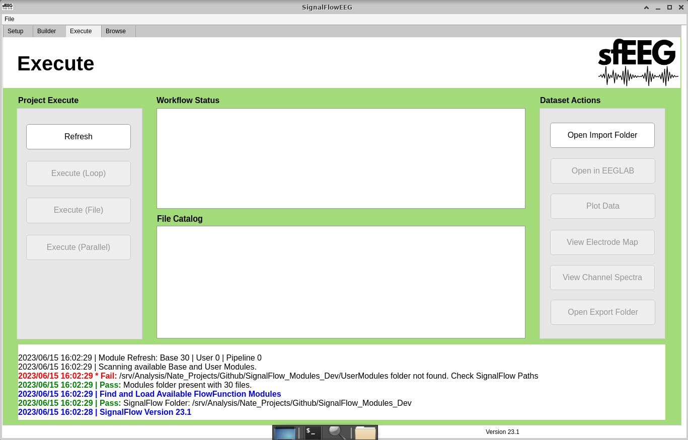

6 Execute Tab
 * The execute tab is used to execute the pipeline on EEG files. Users also have buttons that serve as helpful tools.
6.1 Refresh
- This button is used to refresh the workflow status and file catalog when a change to the file sytem or pipeline has occured.
- An example of this would be adding a file to the import directory. The user must click the “Refresh” button in order to see it in the File Catalog.
6.2 Execute (Loop)
- This button is used to execute the pipeline on all eeg files in the import directory. These will be done one at a time.
- Use this if there are steps that require user input. A. Examples of this include: Remove channels, remove epochs, etc.
6.3 Execute (Parallel)
- This button is used to execute the pipeline on all eeg files in the import directory. These will be done all at the same time.
- This should only be used when the follwoing are true. A. Use this if there are no steps that require user input. Examples of this include: Remove channels, remove epochs, etc. B. You have a high performance computer. C. The pipeline takes longer than 1 minutes to run on a single eeg file. The setup and tear down of workers may take some time. inefficient use could make the processing time longer. D. You have the Matlab Parralel Processing Toolbox
6.4 Execute (File)
- This button is used to execute the pipeline on a selected eeg file in the import directory.
- To use this button:
- Left-click your desired file in the File Catalog.
- Left-click the “Execute (File)” button.
6.5 Open Import Folder
- This button is used to open the import directory in the computers file explorer.
6.6 Open Export Folder
- This button is used to open the selected directory in the computers file explorer.
- To use this button:
- Left-click your desired directory in the File Catalog.
- Left-click the “Open Export Folder” button.
6.7 Open in EEGLAB
- This button is used to open a selected eeg file in the EEGLAB gui.
- To use this button:
- Left-click your desired file in the File Catalog.
- Left-click the “Open in EEGLAB” button.
6.8 Plot Data
- This button is used to plot data for a selected eeg file.
- To use this button:
- Left-click your desired file in the File Catalog.
- Left-click the “Plot Data” button.
6.9 View Electrode Map
- This button is used to view the electrode map for a selected eeg file.
- To use this button:
- Left-click your desired file in the File Catalog.
- Left-click the “View Electrode Map” button.
6.10 View Channel Spectra
- This button is used to view the channel spectra for a selected eeg file.
- To use this button:
- Left-click your desired file in the File Catalog.
- Left-click the “View Channel Spectra” button.